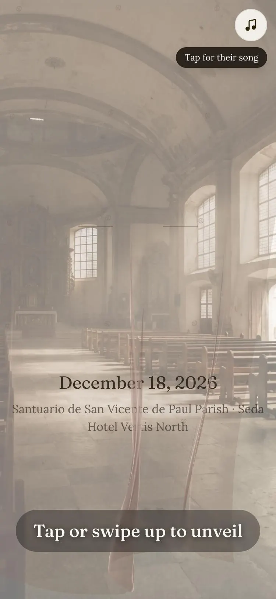
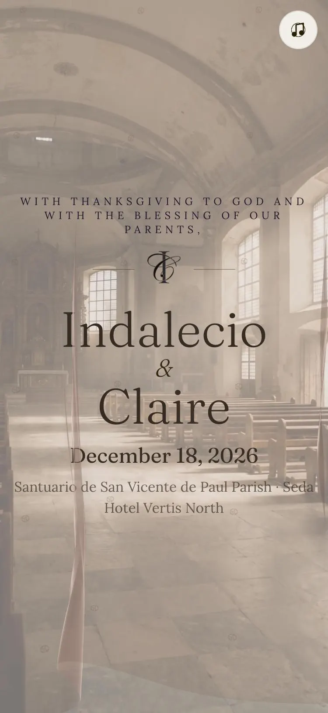
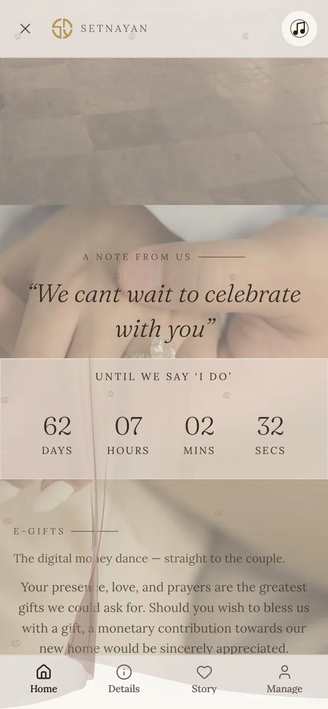
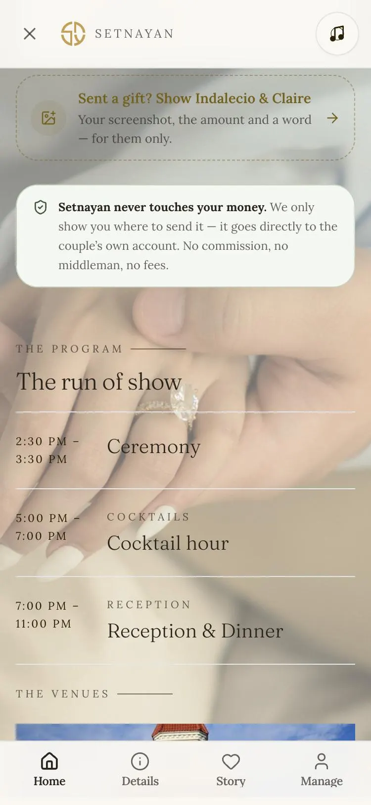
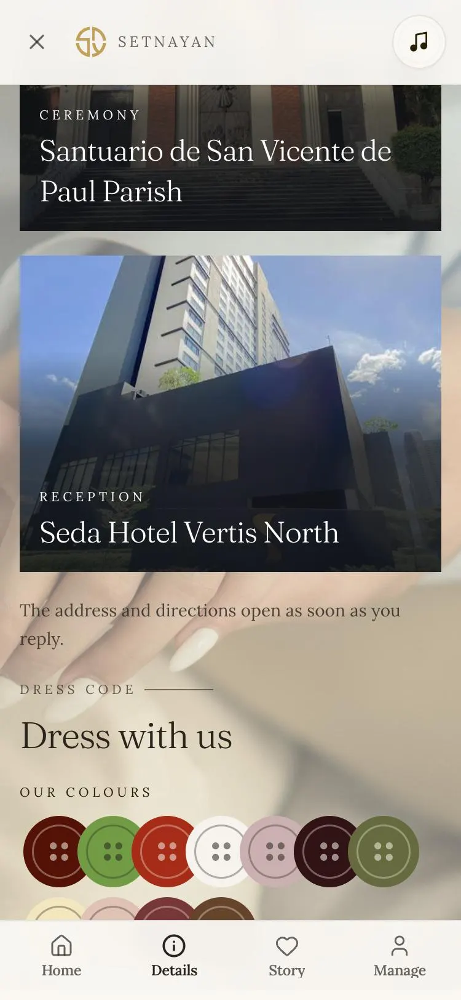
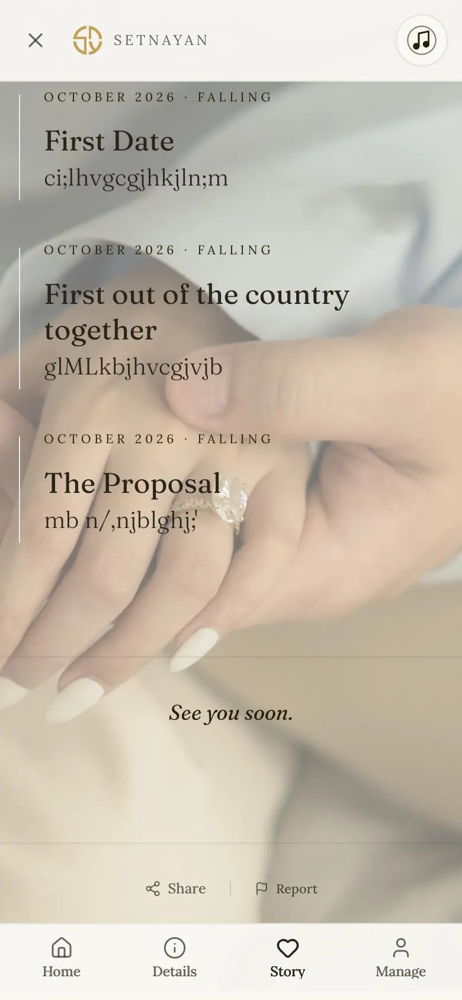
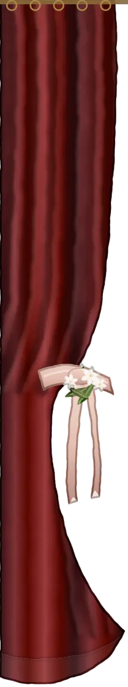
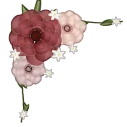
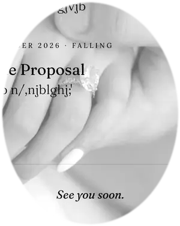
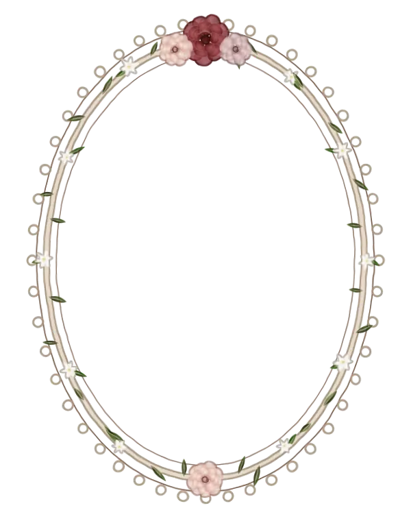

Left: the public page today (www.setnayan.com/cale-ice, read-only captures at 375 and 390). Right: the same captures with the kit laid over them at its slots — a tied drape on the cover, a wax seal on the veil, capiz-arch columns beside the countdown, a flourish under each heading, a rose garland over Reply, a corner spray on the e-gifts card, and a lace oval for the closing. Sway on the drape, Float on the florals, Shimmer on the Event title. The pieces shown are stand-ins (hand-built SVG, watercolour filters, 153 KB for the whole kit) so the slots, the motion and the weight can be judged now; the photoreal renders the owner's references call for are scripted and queued behind the live fixes.






Scroll it. The real page: veil → cover → note + countdown → e-gifts → program → venues → … → See you soon. No art, a plain rule after each heading, a one-line closing.


Reply
Opens the shipped reply sheet — the passcode first for a visitor without a key.


See you soon.
Tap the seal to unveil. Every piece sits in a fixed slot of its section — the couple picks Vintage, the kit comes with it. The Confirm attendance press and the Powered by line are the only pressables, so they are the only framed things.
The competitor page the owner is studying transfers 32.6 MB: 22 images (7 of its painted cut-outs alone are 9.5 MB of PNG — the countdown column is 2.0 MB, the centre curtain 2.5 MB), 2 videos (hero 2.0 MB), 6 fonts. Our kit's ceiling is 600 KB, lazy-loaded, and the page stays what it is today plus the kit.
Stand-in kit · WebP · 9 files
Measured on disk (stat), re-measured live by this page when it can fetch its own files. One drape and one column file each serve both sides (mirrored in CSS).
Stand-in kit · AVIF · 9 files
Same pieces encoded AVIF (magick -quality 48). The page would ship <picture> AVIF → WebP.
Photoreal renders · target
8 renders at 2× slot, AVIF, 30–80 KB each as the references suggest; the two SVG flourishes stay (11 KB). Measured when the lane clears, not estimated into the page.
Their 7 cut-outs
PNG at 630×1920 and up, eagerly loaded. Same richness at 1/16 the weight is the edge.
| Piece | Slot · section | CSS px | Stand-in WebP | AVIF | Motion | How it was made · where it falls short |
|---|---|---|---|---|---|---|
| Cover drape | Cover Scene · both top corners, from the rod | 108 × 576 | 23,354 | 9,398 | Sway 7 s | SVG: velvet gradient, blurred fold bands, blush tieback, sprig. Reads as illustration, not satin — Blender cloth sim with an anisotropic sheen is the fix. |
| Wax seal | Veil · above "Tap or swipe up" | 84 × 84 | 3,080 | 2,141 | still · pressable | SVG: displaced disc, pressed rim, blank centre (the couple's shipped mark sits on it). Close enough; a wax SSS render adds depth. |
| Countdown column | Countdown card · each edge, overlapping the top | 42 × 151 | 14,008 | 6,914 | still | SVG: narra shaft, capiz arch lattice, garland. The capiz has no light through it and the wood no grain — a render has both. |
| Heading flourish | Every section eyebrow · replaces the plain rule | 132 × 24 | 6,144 | 3,620 | still | SVG, kept: at 24 px tall a vector flourish beats a raster; this one stays. |
| Section divider | Between the countdown and E-gifts | 300 × 24 | 5,050 | 3,531 | still | SVG, kept: capiz diamonds on a narra hairline, a sampaguita medallion. |
| Corner spray | E-gifts bank card · top-right corner, over the edge | 118 × 118 | 12,448 | 5,622 | Float 6 s | SVG: layered cupped petals, olive leaves, sampaguita. The weakest against the bar — real peonies need photographed or scanned petals, not procedure. |
| Reply garland | Reply card · over its top edge | 343 × 90 | 25,524 | 11,316 | Float 6 s | SVG: five roses, leaf fan, blush ribbon, trailing vines. Same shortfall as the spray. |
| Closing oval | Closing · around the couple's photo | 300 × 380 | 63,412 | 29,767 | still | SVG: lace ring, scallops, vine, four roses. The heaviest file; a gilt + lace render at this size should land near it. |
| Closing photo (stand-in) | Closing · inside the oval | 232 × 294 | 10,740 | 5,555 | — | A crop of a photo already public on cale-ice (the ring), black and white. Not a kit piece — the couple's own picture goes here. |
| Kit total (8 pieces + the photo stand-in) | 163,760 | 77,864 | 27 % / 13 % of the 600 KB ceiling | |||
The owner sent three competitor pieces and two closing screens with no words. What they share: photoreal, studio-lit cut-outs — a gilded baroque arch frame with a brass chandelier hanging from its crown, an ivory lace fan with a carved guard tucked behind a card's corner, a cascade of white peonies on a gold satin drape spilling past a card's edge; a couple photo in black and white inside an ivory filigree oval; a full-width brown footer band with the names in the title script. None is watercolour. Each overlaps a card edge with a soft contact shadow, so it reads as an object on the page rather than print on it.
blender/kit_scenes.py builds eight scenes — drape (cloth sim, satin sheen), column (fluted narra, capiz lattice with transmission), seal (wax with subsurface), reply garland and corner spray (petal meshes in rings), closing oval (gilt bead ring over a lace underlay), and two optional crowns, a brass six-arm araña for the Program and a lace fan for a card corner. Front-on orthographic, warm key / cool fill / rim, a shadow catcher so the contact shadow lands in the alpha. Written today; not run — the HEAVY lane was held for live fixes. The first run will need fixes.loading="lazy" plus an observer that only starts a piece's animation while its section is on screen (this page does both; the chip above the AFTER phone counts what has loaded). Two files serve four slots by mirroring. Nothing above 80 KB.lib/invite-themes.ts already carries ornament: 'lace-postmark' on Vintage (read today only by find-seat/page.tsx for the postmark date). The kit is that key's full meaning: ART_KITS[ornament] → eight pieces, each with its slot id, 2× size, motion and bytes. The theme is the only switch; the couple arranges nothing (FREE very easy). Whether a kit is Pro rides the theme's tier as everything else does.<KitPiece slot="…">, mounted at eight fixed places — the veil and the masthead (pahina-masthead.tsx: drape pair, seal), the countdown card (countdown.tsx, sceneCardClass), the section eyebrow rule, the E-gifts card, the reply card (rsvp-sheet.tsx's opener), the sign-off (invitation-shell.tsx, data-shell-sign-off: today "See you soon." + "Powered by Setnayan · setnayan.com", hideWatermark kept as is). Decorative: aria-hidden, pointer-events:none, except the seal, which is the veil's existing tap.lib/ambient-effects.ts already has sn-fx-sway for petals and a prefers-reduced-motion rule that names every animation). Shimmer is the sibling's: a new HUB_EL_DURING value in lib/element-style.ts beside HUB_EL_DURING_LABEL (Drift · Still · Ken Burns · Parallax), set from Cover Scene › Animate › Shimmers ▾ or a word's Action; Vintage's kit asks for it on names by default the way Luxe and Gatsby ask for foil (foilNames).hero's or a new closing_photo — owner's call), oval piece, "See you soon.", names in the Event title face, the date, the Powered-by line. Contrast measured: cream on Narra Brown 7.6:1.public/art-kits/vintage/*.avif|webp (or the R2 theme prefix next to the loops), each ≤ 80 KB; a guard that sums a kit and fails above 600 KB, the way loopMb is held by theme-order.test.ts.ART_KITS in lib/invite-themes.ts (typed by slot) · KitPiece + eight mounts · two keyframes + the reduced-motion line · the sign-off's band · the seal on the veil's tap.Files: prototypes/art_kit_cale_ice_2026-10-16/before/ (10 captures) · kit/ (9 WebP + 9 AVIF) · src/ (the SVGs and kit.py, seeded) · blender/kit_scenes.py (queued). Nothing here is repo code.